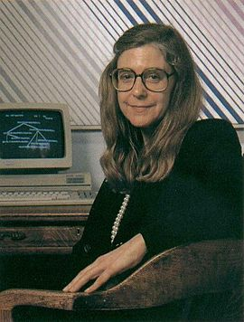

Margaret Hamilton
Margaret Hamilton é uma cientista da computação, engenheira de software e empresária estadunidense. Foi diretora da Divisão de Software no Laboratório de Instrumentação do MIT, que desenvolveu o programa de voo usado no projeto Apollo 11, a primeira missão tripulada à Lua. O software de Hamilton impediu que o pouso na Lua fosse abortado.
Infância
Margaret Heafield Hamilton nasceu em 17 de agosto de 1936.
Ela se formou na Hancock High School em 1954 e estudou matemática na Universidade de Michigan. Formou-se em Matemática pelo Earlham College no estado de Indiana (EUA) no ano de 1958 e fez pós-graduação em Meteorologia no MIT (Instituto de Tecnologia de Massachusetts). Depois de se formar lecionou matemática e francês no ensino médio por pouco tempo, enquanto seu marido terminava a graduação. Ela se mudou para Boston, Massachusetts para fazer pós-graduação em matemática pura na Universidade Brandeis.

Juventude
Em 1960 assumiu uma posição interina no MIT para desenvolver programas de predição climatológica nos computadores LGP-30 e PDP-1 (no Project MAC de Marvin Minsky) para o professor Edward Norton Lorenz no departamento de meteorologia. Naquela época, ciência da computação e engenharia de software ainda não eram disciplinas; em vez disso, programadores aprendiam trabalhando e adquirindo experiência.
Vida adulta
Hamilton se juntou ao Laboratório Charles Stark Draper no MIT, que nessa época estava trabalhando na missão espacial Apollo. Ela se tornou diretora e supervisora da programação de software para os projetos Apollo e Skylab. Na NASA, a equipe de Hamilton foi responsável por estar à frente do software de orientação de bordo da Apollo, necessário para navegar e pousar na lua, e suas variações usadas em várias missões (incluindo a Skylab, posteriormente).
O trabalho de Margaret Hamilton evitou que o pouso na lua da Apollo 11 fosse abortado. Quando faltavam três minutos para a Apollo 11 pousar na lua, vários alarmes do módulo lunar começaram a tocar. O computador ficou sobrecarregado com atividades do radar de aproximação, desnecessárias para o pouso. No entanto, devido à arquitetura robusta do software, o sistema continuou funcionando de maneira que as atividades prioritárias interrompessem as menos prioritárias. Mas ela sabia, por ter escrito o código do computador, que ele seria capaz de realizar o pouso, pois foi programado para desconsiderar as tarefas desnecessárias no momento da alunissagem. A falha foi atribuída a um erro humano na lista de comandos a serem executados pelos astronautas.
Margaret Hamilton é creditada por ter criado o termo "engenharia de software". Ela foi uma das desenvolvedoras dos conceitos de computação paralela, priority scheduling, teste de sistema, e capacidade de decisão com integração humana, tais como mostradores de prioridade que viriam a ser o fundamento do design de software ultra confiável.
